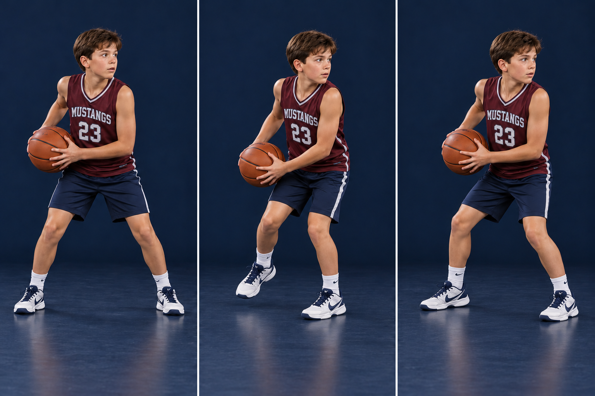

A front pivot is also called a forward pivot. The free foot travels forward relative to your starting stance, while the other foot stays at its pivot point. Use it to face a passing target or square to the basket.
PHOTO WALKTHROUGH
Clear stills · one action at a time
3 photo steps

01
Step 1 · Start with a strong base
STEP 01
Start with a strong base
Left foot anchors; right foot is free.
Use a stationary two-foot catch for this rep. Choose the left foot as your pivot and keep your knees comfortably bent.
Grip the ball with two hands. Keep it close enough to protect, with your eyes looking at the next target.
Catch this mistake
Standing straight up or holding the ball at full arm’s length.
02
Step 2 · Sweep forward
STEP 02
Sweep forward
Small step. Chest and hips turn together.
Move the right foot forward around the left pivot point. Turn on the left forefoot; do not slide that foot across the floor.
Move the ball compactly through an open low window, or another clear window the defender allows. Use your body as protection; avoid swinging the ball or elbows through the defender.
Catch this mistake
A high kick, an overlarge crossover step, or letting the ball hang away from the body.
03
Step 3 · Arrive ready to act
STEP 03
Arrive ready to act
Balanced feet. Ball ready. Read first.
Place the free foot down with space between your shoes and knees aligned naturally. Finish with the chest facing the new angle.
Pass if the window is there. If you drive, release the ball before lifting the pivot. If the drive is not available, keep your balance and look again.
Catch this mistake
Rushing the first dribble and lifting the anchor too early.
AI-created photo illustrations for teaching body positions. These are separate stills, not slow-motion game footage. Use the written cues and diagrams for movement direction and rules.
The diagram fixes the pivot point and direction. Teal stays; gold moves forward. Mirror the action to practice the other foot. Start with a comfortable quarter-turn.
ANCHOR → STEP AROUND → SEE THE FLOOR
KEEP IT LEGAL
Know the boundary
For this drill, catch while standing with both feet down. Once one foot lifts, the other is your pivot. Turn on that spot; do not drag it or switch feet. To start a dribble, release the ball BEFORE lifting the pivot foot. To pass or shoot, you may lift it, but release before it returns to the floor. If you jump to pass or shoot, release before either foot lands. After ending a dribble, you cannot start another one.
TRY IT AT PRACTICE
Start slow, then add a read
Coach points to an open target. Forward-pivot a quarter-turn and make a firm two-hand pass. Do 5 reps off each pivot foot, then add a defender’s passive hand to make the ball path a decision.
Ask yourself
Did my body and the ball turn together without moving my anchor?
Coaching references & teaching notes
These are team teaching adaptations. Sources support the principles; the AI-created illustrations are not official rules diagrams or endorsements. Check your event’s local rules with the coach.